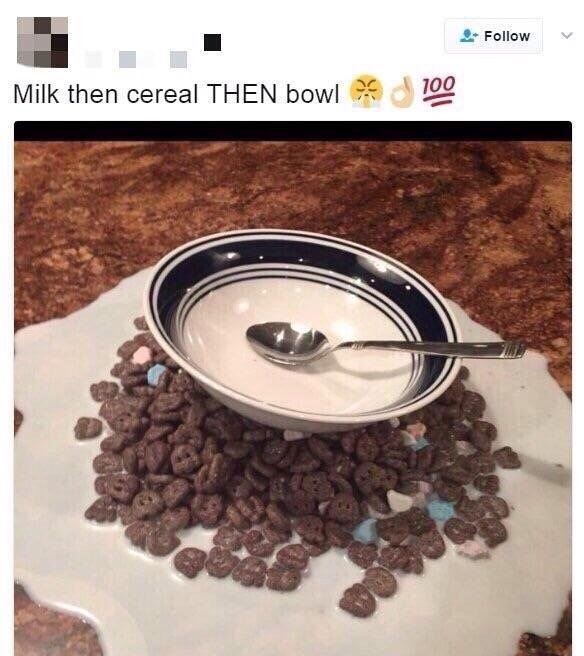

Milk and Cereal

Description
We are going back to the basics for this one! A simple bowl of cereal
with milk. You can never go wrong with cereal for any meal. The only
two things you must figure out is what cereal and what milk. But we will
stick with the basics here and let you figure out your own preferences!
Ingredients
- Milk (whatever kind you prefer. Can be oatmilk, whole milk, soy milk.
The sky is the limit! Just no goat milk!)
- Cereal of choice. I prefer the bland cereals like Chex and cheerios
but you may find yourself preferring a sweeter option. So just go with your gut on this one!
- A container of sorts. Bowls are preferable but you could use a pot or cup if you wish.
- Some sort of eating utensil. For this dish I prefer a spoon but a ladel or fork can work as well.
Steps
- Confirm there is in fact your desired milk in the location you find yourself. Do not skip this
step or disappointment will come for you some day.
- Get your container. In this case I went with a bowl.
- Obtain your desired cereal. For me this is Chex. You may find yourself on the wrong side of history and
have chosen Raisin Bran. This is okay. I'll keep it our secret.
- Pour the desired amount of cereal into your container.
- Put enough milk in the cereal bowl as you desire. I find this amount to be when I can barely start to see
the milk through the cereal so that I have enough to moisten the cereal pieces before ingestion.
- Next get your eating utensil. For me I went with a spoon. You may have chosen a butterknife. This would be incorrect.
Please try again and choose something that can carry enough cereal to actually enjoy yourself.
- Lastly, eat it as you desire. I prefer to drown the section of cereal I'm about to eat so I can enjoy the milk and cereal
together. You might eat the dry parts first like a psychopath. Eveyone has their own roles in this life.